Overview
At Zenni Optical, I worked across a mix of unusually different but complementary product challenges: immersive vision testing in VR, AI-assisted experiences for complex e-commerce flows, and UX research leadership within the product design team. Although my formal title was Senior Product Designer, my role regularly spanned product thinking, research leadership, system design, and cross-functional coordination.
My first year focused on a VR eye exam initiative, where I worked as a hybrid PM, designer, and researcher on a small team building a consumer-facing vision testing experience in VR. In my second year, I moved onto Zenni's broader UX team, where my work shifted toward e-commerce, AI, design systems, and internal research leadership.
Across these projects, a recurring pattern in my work was bringing structure to ambiguity: shaping product direction, building clarity around complex systems, running or supporting research, and translating emerging ideas into usable, testable, and communicable design decisions.
My Contribution
I was often brought into projects that needed more than just screen design. My role regularly included a mix of product framing, UX architecture, research planning and synthesis, workflow design, communication, and stakeholder alignment. At Zenni, that meant helping teams move from ambiguity toward clearer decisions - whether that was through prototype testing in VR, structuring an AI-assisted lens flow, or leading the design of a smarter search experience.
VR Optician / VR Eye Exam
Launched product
Zenni Vision VR launched publicly on the Meta Quest Store and continues to be used in live screening contexts.
Project setup
Zenni originally brought me on to help shape a VR-based eye exam experience. This project was a strong match for my background coming out of ZenVR, because it required a similar blend of product vision, immersive interaction design, research, and technical collaboration. Our core team consisted of me, two Unity VR developers, and a clinical stakeholder who was also a practicing optometrist.
My role extended well beyond interface design. I helped shape the product vision, prioritize features, manage team timelines, and keep the work moving as a hybrid PM, designer, and researcher. Over the course of roughly a year, we explored multiple forms of virtual vision testing, including different approaches to acuity and astigmatism assessment.
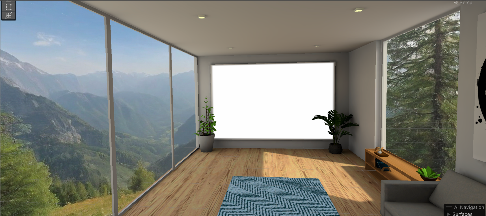
The final testing environment balanced clarity, calm, and visual polish around the core exam flow.
Interaction exploration
To get there, I explored a broad range of interaction patterns before converging on final directions. These included floating menus, player-mounted menus for both hand and controller interactions, joystick movement, controller tilt, gaze, diegetic interfaces, voice interaction, and wall-based targeting. This exploration helped us evaluate what felt teachable, usable, and appropriate for a vision testing experience.
I also designed the broader product shell around the experience, including tutorial and instruction flows, settings, progress feedback, main menu states, onboarding and offboarding, and a guardian-style guidance system that kept users oriented in the correct part of the virtual environment.
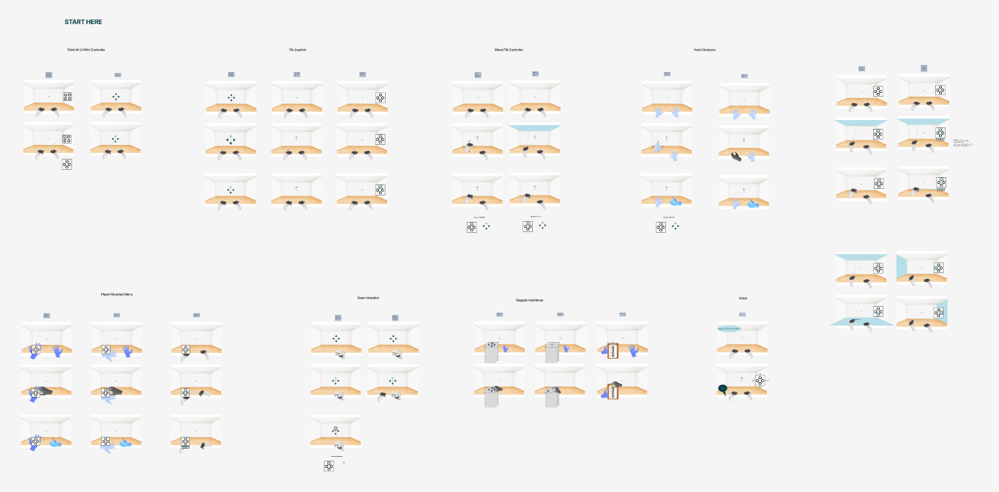
Early interaction studies compared multiple input paradigms before we narrowed to directions that felt teachable and reliable in VR.

A representative in-product test state, showing how target presentation, answer selection, and progress feedback worked together.
From prototype to live deployment
Beyond interaction design, I also designed and built the surrounding 3D environment using Unity, Blender, and Adobe texture tooling. That work helped shape the application as a polished immersive product rather than just a functional testing utility.
A major part of the process involved in-person prototype testing. I recruited and ran sessions with real glasses wearers, put participants into the headset myself, observed their interactions, captured notes and feedback, and brought those findings back into the next iteration cycle. I also wrote and voiced parts of the in-headset script and helped represent the product at live eye screening events where Zenni used the application in the field.
The result was a working VR application that moved beyond prototyping into real-world use.
Design ownership across the VR experience
- Explored multiple interaction paradigms before selecting final test directions
- Designed and built the 3D environment in Unity, Blender, and Adobe texture tooling
- Created tutorial, instruction, settings, and menu flows around the core tests
- Designed progress feedback, onboarding/offboarding, and user guidance systems
- Helped shape the product as a full VR experience, not just a set of isolated tests
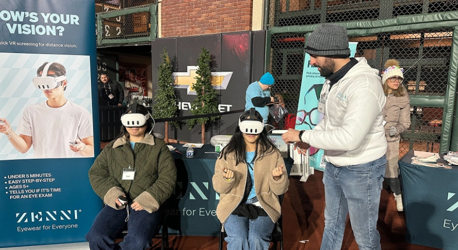
The app was used at live screening events, where I helped administer the experience directly with participants.
A recorded walkthrough gives a better sense of the flow, pacing, and feel of the live product.
AI Lens Customization Agent
One of Zenni's biggest UX challenges was the lens customization flow: a complex, high-friction experience where users often struggled to understand lens types, coatings, prescriptions, pricing tradeoffs, and upgrade decisions. This initiative explored whether a virtual optician could guide users through that complexity - answering contextual questions and helping them make more confident choices inside the existing flow.
Research and design contributions
- Led the survey, interview follow-up, cleaning, analysis, and synthesis work
- Identified confusion points in the existing lens customization flow and trust boundaries around AI assistance
- Turned findings into UX guidelines, north stars, and a heuristic scorecard for evaluation
- Explored a contextual virtual optician that could guide users without replacing the flow
- Helped define both an MVP path and a broader long-term assistant vision
Research Foundation
I led the research foundation for this work. That included a large UserTesting survey with more than 100 initial responses, which I manually cleaned down to a final sample of 85 participants. The research focused on two main areas: where users were getting confused in the existing lens customization flow, and how comfortable they were with AI assistance in an e-commerce context more broadly.
I also ran follow-up unmoderated interviews across three familiarity groups - highly familiar with AI, moderately familiar, and unfamiliar - to understand what kinds of help users would trust from an assistant during lens customization, and where they wanted structure versus control.
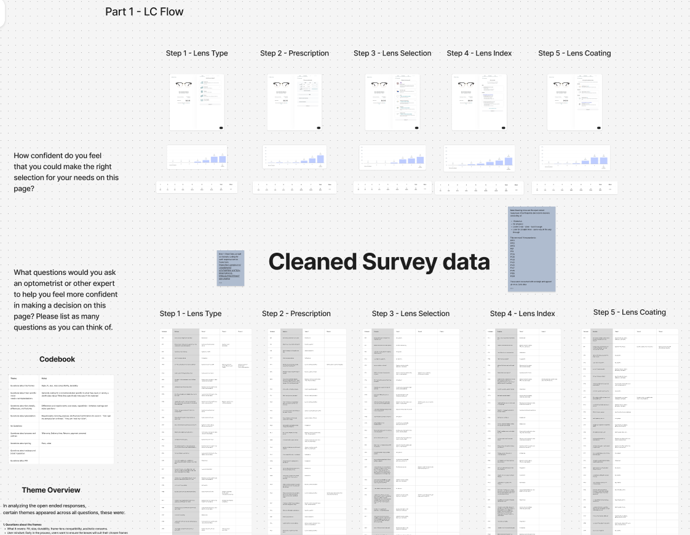
The research foundation included a large cleaned survey dataset and follow-up study structure focused on confusion points in lens customization and user comfort with AI assistance.
From Insights to Design Principles
I synthesized the survey and interview data through thematic analysis and supporting quantitative review, then translated the findings into a structured set of UX findings and design guidelines for AI in this context. Those guidelines focused on three broad areas: ease and flexibility of interaction, proactive relevance and intelligence, and trust, transparency, and responsiveness.
From there, I created a heuristic scorecard that could be used to evaluate future assistant concepts against those principles. This helped turn the research into something directly actionable for design, rather than leaving it at the level of insight alone.
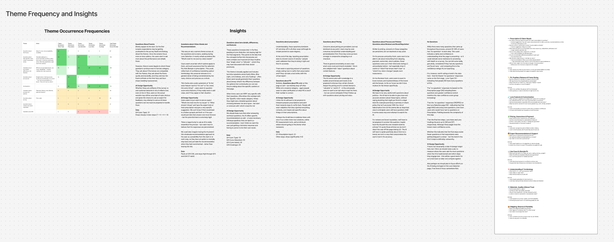
Thematic analysis translated the raw research into recurring problem areas, opportunity spaces, and clearer design implications for an AI assistant.
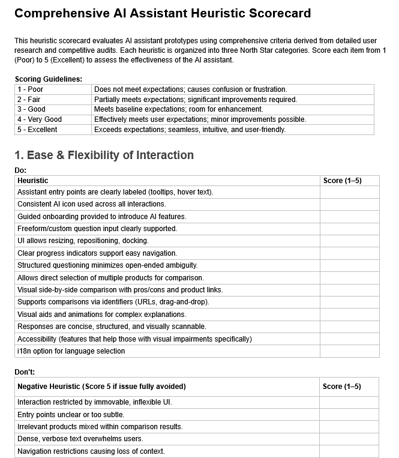
Those findings were then formalized into a heuristic scorecard that could be used to evaluate future assistant concepts against the core UX principles.
Designing the Virtual Optician
On the design side, I explored how a virtual optician could live alongside the existing lens customization flow rather than replacing it outright. My own direction leaned toward a three-panel layout, where the assistant could remain contextually aware of the current step, reference information already provided by the user, and guide decisions through a mix of proactive prompts, suggested question pills, structured response options, and richer output formats.
The goal was not just to make the assistant conversational, but useful inside a constrained purchase flow. That meant thinking through when it should ask questions, when it should surface recommendations, how it could compare options, and how it might output different response types such as recommendation cards, comparison tables, or product-specific guidance.
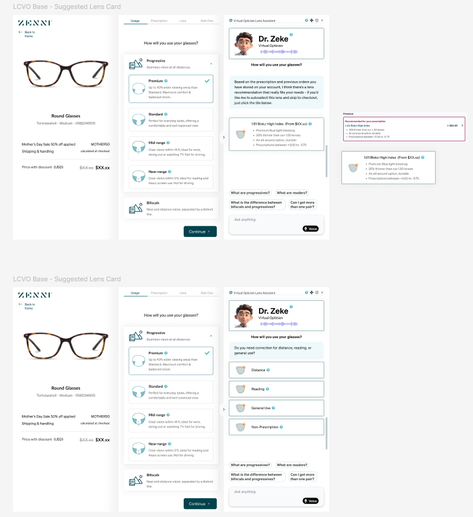
These concepts explored how the assistant could stay context-aware within the existing flow, combining guided questioning, suggested prompts, and recommendation formats.
Toward a Short-Term MVP and Long-Term Vision
The project also included a distinction between a short-term MVP and a broader long-term product vision. In the near term, the assistant could function as a more lightweight contextual guide layered into the existing experience. In the longer term, we began defining a richer component system and response framework that would allow the assistant to become more dynamic, interactive, and genuinely expert-like over time.
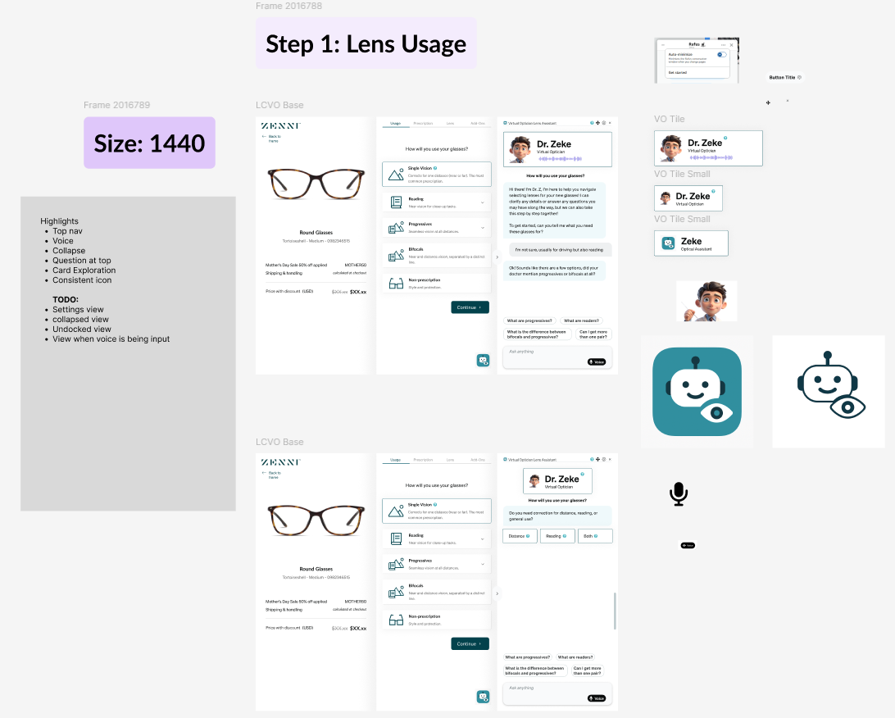
A three-panel direction explored how the assistant could remain persistently available without fully taking over the lens customization experience.
This project was one of the clearest examples of how I like to work: grounding an ambiguous AI concept in real user research, turning that research into concrete design principles and evaluative tools, and then using those foundations to shape a product vision with both near-term practicality and longer-term ambition.
AI Search
Later, I became the primary designer on an AI search initiative focused on making Zenni's search experience feel more intelligent and flexible. The core challenge was not only enabling more natural-language search, but helping users understand what was different about it: how to discover AI mode, what kinds of queries it could support, how long it might take, and how AI-generated results should appear without overwhelming the existing shopping experience. My role extended from early concept framing through high-fidelity design, where I built polished Figma mockups for handoff and translated the system into both web and mobile patterns.
Why this project matters
This project reflects the kind of product design work I increasingly enjoy most: taking a technically ambitious capability and shaping the UX around comprehension, trust, behavior change, and real-world usability.
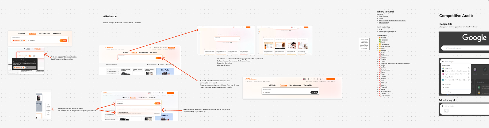
Competitive research helped identify how other companies signaled AI capabilities, introduced new search behaviors, and balanced novelty with familiarity.
Shaping AI Search Entry
A major part of the work centered on discoverability and onboarding. I explored how AI mode could be introduced directly within the homepage search bar without permanently increasing its footprint on a tightly controlled page. The final direction used an expandable vertical search state, a clear AI mode toggle, subtle visual changes such as a gradient stroke and specialized search button, and a suggestion tray that helped signal the system's capabilities without adding too much clutter.
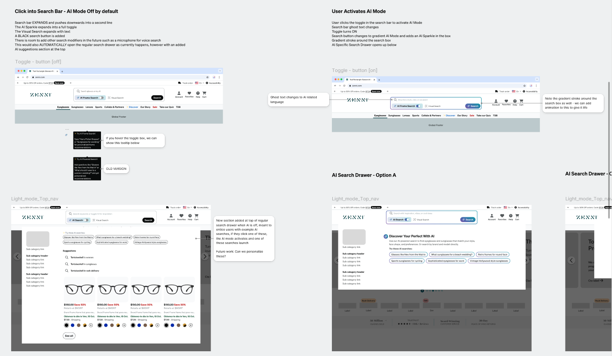
Homepage search explorations focused on discoverability, footprint, and how AI mode could be introduced without permanently expanding the search bar.
Designing the Thinking State
Because AI Search could take 10 or more seconds to return results, I also designed an intermediate "thinking" state rather than dropping users immediately onto a loading product listing page. I proposed using the existing search drawer pattern to show progressive thinking updates, lightweight animation, and staged system feedback so the wait felt intentional and legible rather than broken or ambiguous.
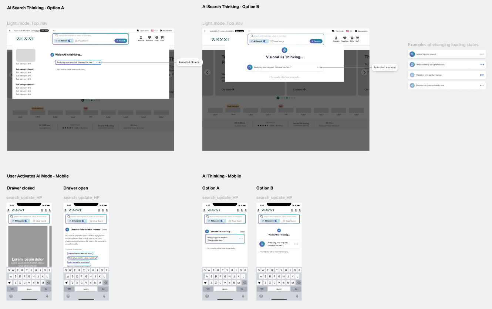
The thinking state used the existing search drawer pattern to communicate progress, reduce ambiguity, and make the slower AI flow feel intentional.
Integrating AI Results into the PLP
The final phase focused on how AI-generated results should appear once users reached the product listing page. I explored multiple levels of reasoning visibility, takeover, and AI labeling before landing on a relatively minimal, collapsible reasoning box at the top of the results. That approach let the AI stay visible and explainable without disrupting the core shopping flow too aggressively.
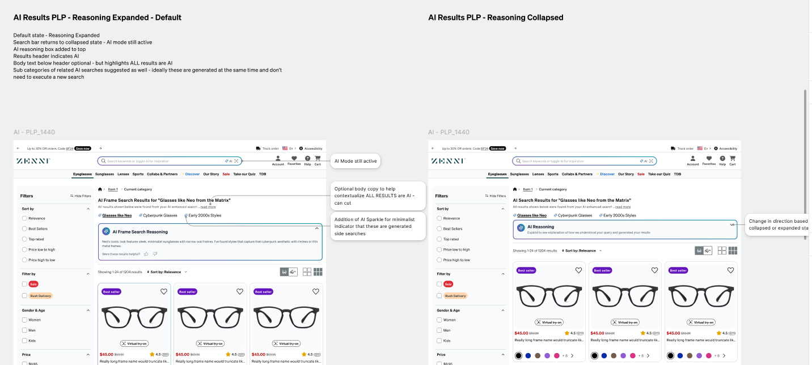
Results-page explorations tested how much AI reasoning to show, how strongly to label AI-generated results, and how much of the PLP the system should take over.
This project was especially meaningful because it treated AI Search as more than a technical feature. It required designing the full behavioral arc around it - discovery, expectation-setting, latency communication, and results interpretation - so the experience felt understandable and trustworthy in a live e-commerce context. I carried that work into high-fidelity Figma designs for developer handoff, creating reusable components and responsive web and mobile variants, and iterated on the designs through feedback from the PM, the engineering lead, and a broader critique workshop with the UX design team.
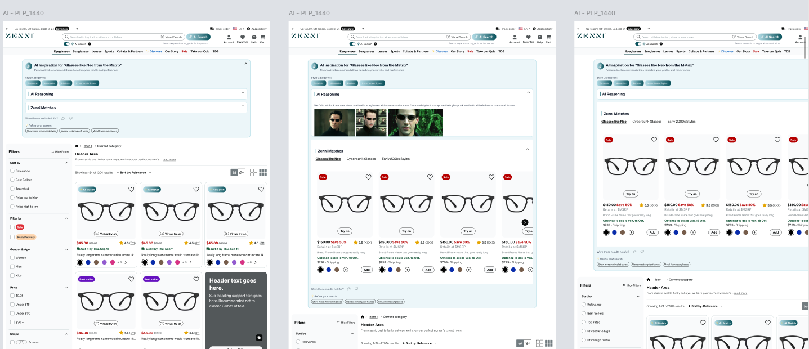
Earlier results-page concepts explored more assertive AI takeover patterns before the design narrowed toward a lighter, collapsible explanation model.
Research Ambassador
Alongside my product work, I also became an informal research ambassador within the UX team. Although Zenni had a dedicated research organization, I frequently helped initiate studies, shape research questions, choose methods, and support teammates in running and synthesizing user research across projects.
In practice, that role meant more than conducting my own studies. It meant helping make research more accessible and actionable inside the design team - whether through surveys, unmoderated interviews, usability tests, competitive audits, or internal methods support. Over time, this became a meaningful part of how I contributed: not just producing insights, but helping create a stronger research culture around the work.
What this role included
- Ran surveys, unmoderated interviews, usability tests, and competitive audits
- Supported teammates with research planning and execution
- Synthesized findings into design recommendations and next steps
- Helped increase team confidence in selecting and using research methods
- Acted as a research-minded bridge within the product design organization
A representative sample of the research efforts I supported or led across Zenni's UX team:
| Project | Method | Focus | Outcome / Impact |
|---|---|---|---|
| Lens Customization Clarity Survey for AI Foundation | Quantitative Survey | Understand what users need to know to feel confident through the lens customization flow | Identified top questions at each step; findings informed Gemini agent prompting and UX copy |
| AI Shopping / Interaction Interviews | Unmoderated Interviews | Explore user expectations and reactions to AI shopping assistance | Helped shape broader AI interaction thinking across the team |
| LC Answer Validation | Survey + Unmoderated Interviews | Validate how users interpret lens-related questions and answers | Informed refinement of survey content, copy guidance, and answer framing |
| Checkout Redesign A/B Evaluation | Usability Testing | Gauge usability perception of the new checkout flow | Users responded positively to chunking and visuals; findings helped finalize the redesign |
| Cart V2 Usability Test | Unmoderated Interviews | Evaluate clarity, discoverability, upsells, promo messaging, and purchase confidence in the new cart | Produced synthesis and report to inform iteration readiness before checkout handoff |
| AI Search Agent - Competitive Audit | Competitive Analysis | Analyze e-commerce AI search patterns and emerging design features | Identified patterns from companies like Alibaba that informed AI Search design directions |
| UX Methods Workshop Planning | Internal Enablement | Increase team confidence in selecting and using research methods | Supported design-team research autonomy as part of mentorship and leadership work |
This sample reflects the breadth of research work I supported or led across AI, purchase path, checkout, cart, discovery, and internal team enablement.
Supporting Contributions
In addition to the flagship initiatives above, I also contributed to Zenni's design system and broader product infrastructure work. That included helping develop and refine Figma components, contributing to the shared library, and supporting migration work into a newer Next.js-based framework. While this was supporting work rather than the center of the story, it strengthened my fluency in scalable systems thinking, implementation-aware design, and developer handoff within a large e-commerce environment.
Outcome
Zenni was one of the broadest product design environments I have worked in. It asked me to move across very different problem spaces - immersive health-tech, complex e-commerce systems, AI-assisted experiences, and team-level research support - while maintaining a consistent ability to structure ambiguity and move work forward.
What I value most about this body of work is that it shows range without losing coherence. Across these projects, the common thread was not the specific domain, but the role I was playing: helping translate messy opportunities into clearer product direction, stronger UX, and more grounded decisions.
For me, the page represents an important bridge between my earlier immersive and research-heavy work and the more mature product design, systems thinking, and AI-focused work I want to keep doing.